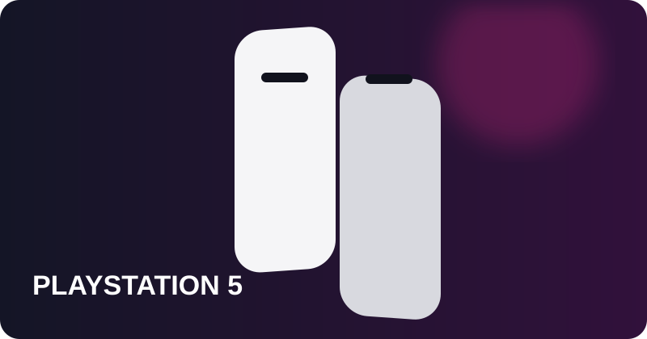
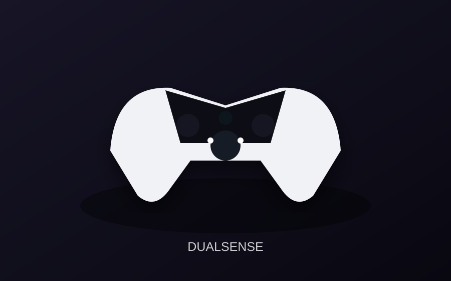
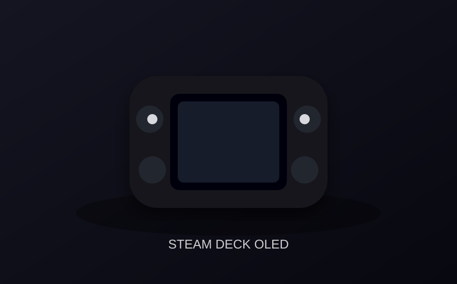
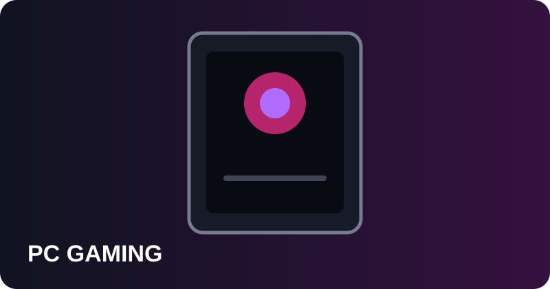
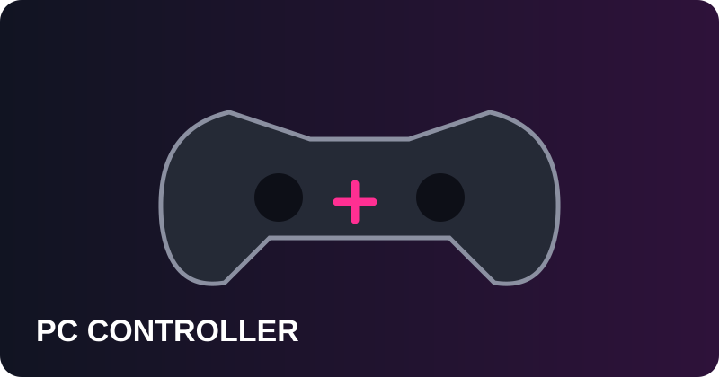
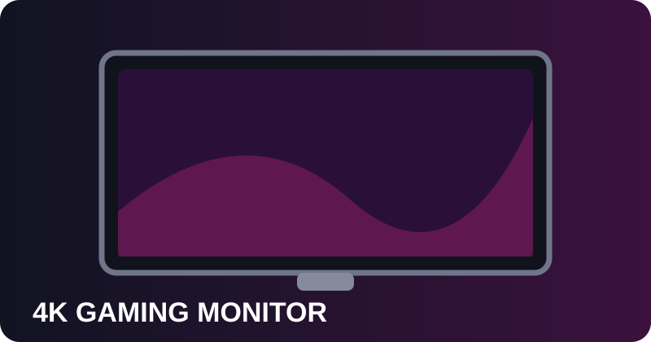

← Volver a la homeEQUIPAMIENTO GTA VI¿Tienes el equipo necesario?
Una selección visual de hardware y accesorios para disfrutar al máximo de GTA VI. Comparamos lo bueno y lo malo para que puedas elegir mejor.
✦ Selección de productos✓ Pros y contras↗ Enlaces de afiliado Amazon♡ Apoya el proyecto

PlayStation 5
CONSOLaLa opción más sencilla para jugar en consola cuando llegue GTA VI.
✓ Pros- Experiencia directa
- Buen rendimiento
- Sin complicaciones
✕ Contras- Inversión inicial
- Menos flexible que PC

Mando DualSense PS5
ACCESORIOUn segundo mando o sustituto para sesiones largas.
✓ Pros- Ergonomía
- Muy cómodo
- Ideal para conducción
✕ Contras- Coste adicional
- No aumenta potencia

Steam Deck
PORTÁTILUna alternativa portátil para tu biblioteca gaming.
✓ Pros- Portabilidad
- Gran biblioteca
- Versátil
✕ Contras- GTA VI no confirmado oficialmente
- Menos potencia

PC Gaming
PCLa opción más flexible para jugar y actualizar componentes.
✓ Pros- Muy configurable
- Actualizable
- Versátil
✕ Contras- Precio variable
- Más configuración

Mando para PC
ACCESORIOUna alternativa cómoda al teclado y ratón para conducir y jugar.
✓ Pros- Cómodo
- Fácil de usar
- Ideal para conducción
✕ Contras- Accesorio adicional
- Revisar compatibilidad

Monitor 4K
PANTALLAUna pantalla 4K puede sacar más partido a la experiencia visual.
✓ Pros- Alta resolución
- Más nitidez
- Sirve para PC y consola
✕ Contras- Precio superior
- Depende del dispositivo
Prepárate para Leonida
Elige tu plataforma, mejora tu experiencia y llega preparado al lanzamiento.
Volver a GTA6Trucos →